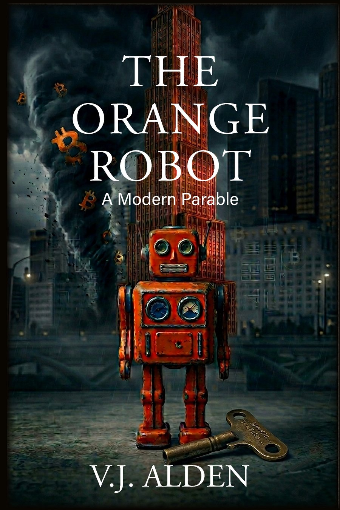

V.J. Alden · A Modern Parable
A boy who could see what others couldn't.
Brothers who couldn't forgive what they saw.
Some keys unlock more than machines.

The Story
Some keys unlock more than machines.
Joey Harlan was always the gifted one — the boy who could take apart any machine and see the patterns no one else could. The dreamer. To his father, that gift was a blessing. To his half-brothers, it was one more reason to resent the favorite son.
When a devastating betrayal tears him from everything he knows, Joey is cast out with almost nothing: a battered orange wind-up robot, and a secret hidden inside it that he's only beginning to understand.
What follows is a twenty-year odyssey of exile and reinvention — from the mud of Ohio construction sites to the glass towers of a new technological age, wrestling with forgiveness, faith, and a revolutionary form of money that just might free ordinary people from the systems built to control them.
The Orange Robot is a modern retelling of the biblical story of Joseph, reimagined for an age of artificial intelligence, robotics, and Bitcoin. Long before Bitcoiners talked about being "orange pilled," Joey learns the hard way what it means to hold your own keys — that self-custody is a discipline of faith and patience, years before the coins he quietly mined in 2009 are ever worth discovering.
The World
The Orange Robot hides its secrets in plain sight. These games are built for readers who want to go deeper — or who haven't read the book yet and want a taste of its world.
Questions
The Orange Robot is a modern parable that retells the biblical story of Joseph — his coat, his dreams, his betrayal, his rise to power in Egypt — as the story of a boy named Joey Harlan, an orange wind-up robot, and the Bitcoin hidden inside it. It's written for readers of faith who are curious about Bitcoin, and for Bitcoiners who are curious about the story of Joseph.
A Bitcoin parable uses Bitcoin's real properties — self-custody, scarcity, the responsibility of holding your own keys — as symbols within a larger story about faith, character, or morality, the way Jesus used seeds and coins in his parables. The Orange Robot maps each beat of Joseph's story in Genesis onto a modern equivalent: the coat of many colors becomes a toy robot, the pit becomes a construction-site betrayal, and Pharaoh's rise becomes the discovery of a Bitcoin wallet worth millions. You can see the full symbol-by-symbol breakdown on the Joseph Parallels page.
Yes. The Orange Robot is a direct modern retelling of Genesis 37–45 — the story of Joseph, his coat, his dreams, his betrayal by his brothers, his years in exile, and his eventual rise to power and reunion with his family. Every major beat of the ancient story has a counterpart in Joey Harlan's life.
No. The Orange Robot is written first as a story about family, betrayal, and forgiveness. The Bitcoin elements — self-custody, private keys, cold storage — are woven into the plot in ways that make sense even if you've never owned any. If anything, readers often come away understanding Bitcoin's core ideas better simply from following Joey's journey.
The Key
If this book meant something to you, you can send Bitcoin directly — no middleman, no platform cut. The balance below updates in real time, a living record of readers who chose to connect.
Total received
1 satoshi or 1 Bitcoin — every transaction is part of the story.
The Orange Robot is a work of fiction. Nothing on this site is financial or investment advice. Bitcoin's price is volatile and self-custody carries real risk of permanent loss — please do your own research before making any financial decisions.